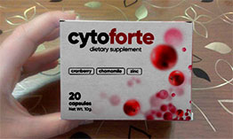

Момичета, SOS! Миналата седмица дълго се разхождах със сина си, той спи добре само докато го разхождам навън в количката и очевидно краката ми измръзнаха в кецовете. В резултат на това, имам цистит. Не мога да се отърва от него третия ден, пронизваща болка, тичам до тоалетната на всеки 5 минути, напълно се измъчих. Кой се е сблъсквал с такава инфекция, кажете ми как сте се лекували, какво ви е помогнало. Надявам се само на вас!

Как ви разбирам! На фона на слаб имунитет, циститът се развива след бременност. Веднага след като идва студения сезон той се появява! С какво само не се лекувах, хапчетата дават временен ефект, пих толкова много от тях, че започнаха проблемите със стомаха. Ето защо, преминах към естествени средства. От всичко, което съм опитвала, най-доброто определено е .
Това не са миризливи билки, които не могат да се пият, а капсули. Съдържат всякакви видове витамини, цинк, лайка и екстракт от червена боровинка. Четох, че тези компоненти много добре облекчават възпалението и болката.
Общо взето пиех 10 дни 2 пъти дневно. Симптомите изчезнаха вече на втория ден, след това възпалителният процес също изчезна. След седмица не си спомнях какво е цистит. Минах един курс, така че със сигурност да оздравея. И вече 2 години не изпитвам тази болка! Прочетете още тук повече за , там всичко е написано, и как работи и т.н. Късмет!

Майка ми ми приготвяше някакви билки, но с тях също трябва да се внимава, получавах обрив, ако прекалявах с тях.

ох, страдам и аз от цистит. поради инфекция, той се е разви. на моменти изчезва, на моменти изпитвам страшни болки! ще чуя какво препоръчват тук.

Аз също така се отървах от цистит с помощта на .Един лекар ми го препоръча. Момичета, не искам да се урочасам, но вече от половин година нямам тази зараза.

Така или иначе се пазете от преохлаждане на краката. И отидете на изследвания за инфекцията. Като цяло, аз също съм за естествените средства, химията само трови тялото ни.

Но много хора не разбират какво е цистит и просто заглушават болката и дискомфорта с хапчета. А това е възпалителен процес, който може да стане хроничен (както при една моя приятелка). Така че момичета в никакъв случай не отлагайте лечението.

Страдам от хроничен цистит, струва ми се, че е невъзможно да го излекувам, така го запуснах преди време... сега се опитвам да се грижа за себе си, никога да не се преохлаждам.
абе, за какво говориш, можеш да го излекуваш и без антибиотици. Майка ми страдаше повече от 10 години, дори лекарите вдигнаха ръце, поръчах й чрез интернет . Първо се съпротивляваше, казваше, че няма да помогне. Помогна! Така помогна, че вече 3 години не знае какво е болка. Наскоро тя отиде на гинеколог, резултатите й са много по-добри, няма повече вредни бактерии. Бих посъветвала всички жени да пият това за превенция.

Доколкото знам, само в интернет на официалния сайт се продава. Поръчах тук, пристигна бързо в рамките на 2-3 дни. и в аптеките могат да бъдат фалшификати, аз вече четох за това. Така че е по-добре да поръчате само от производителя.
Излекувах се с помощта на някакви капсули, сега не си спомням наименованието. те помагат добре, но след това трябва да възстановите чревната микрофлора, защото тези капсули са силни.
Веднага щом се разведох със съпруга си, циститът спря веднагао. Знаех, че той е виновен.

Аз също имах цистит. По време на лечението лекарят ми даде следните съвети. За да облекчите болката по време на остър период, можете да се затоплите с подгряваща подложка (да я държите между краката), но това е, ако имате цистит без кървене. По време на обострянето - пълна сексуална почивка (това беше най-трудното нещо за моя съпруг и мен). Симптомите постепенно изчезват, но не знам за колко дълго. Засега нямам от един месец.

Слава на Бог, никога не съм изпитвала такова нещастие и се надявам че никога няма да имам. Винаги се обличам според времето, през зимата като цяло нося по три чифта чорапи, два чифта панталони и т.н., измъчват се тези,които носят чорапогащник, когато навън е -20.

вие наистина не знаете точно какво е цистит, тъй като пишете такива глупости. появата му е свързана дори с неправилното хранене, физиологията как точно са разположени вашите органи. какво общо с това имат чорапогащите? или мислите, че всички ние сме неадекватни тук и ходим голи през зимата?

Всички лекари съветват само антибиотици, те не разполагат с нищо друго в своя арсенал. Но това не отстранява проблема, след седмица или две всичко започва отново. Имам приятелка, която е изпила три курса на антибиотици. Как приключва да ги пие, след една седмица отново се разболява. Отива пак на лекар - той отново й предписва антибиотик, друг, по-силен. И така, се върти в кръг. В крайна сметка, тя ме послуша, и си поръча и след 3 дни се оправи, въпреки че й стана по-лесно почти веднага. И няма нужда да се тровите. Но хората не разбират това веднага. Жалко.
Имам същия проблем ... забелязах: влошаване на следващий ден след секс или след приемане на алкохол, дори и в най-малки дози.

Трябва да пиете много. Пийте сок от червена боровинка халон, яжте много кисело мляко. Също така вземете гореща вана със сода и си пригответе чай от лайка и пийте 4 пъти на ден. Макар и за известно време, но ще забравите за тези ужасни усещания.

И защо за известно време, ако можете да се отървете завинаги? Знаете ли защо сокът от червени боровинки е добър за пиене? Съдържа аминокиселини, които убиват бактериите, които причиняват цистит. Затова екстрактът от червена боровинка е основната съставка на . А цинкът подобрява ефекта и укрепва имунната система, така че болестта да не се върне. Затова не се занимавайте с тези глупости, а вземете лекарство, което наистина помага.